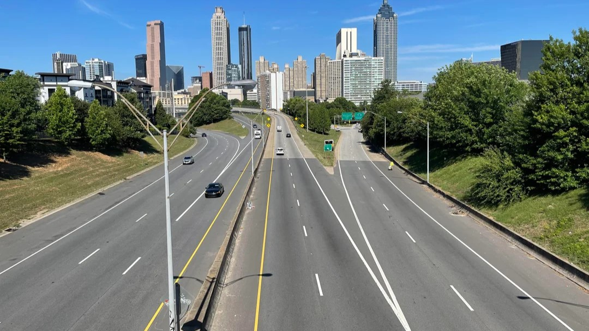
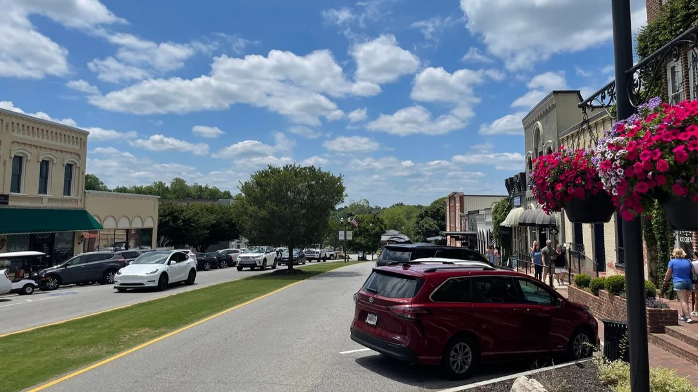
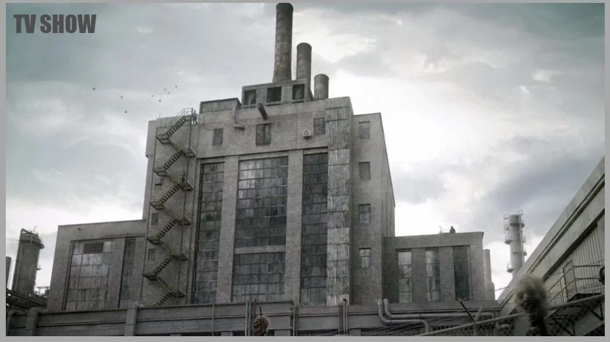
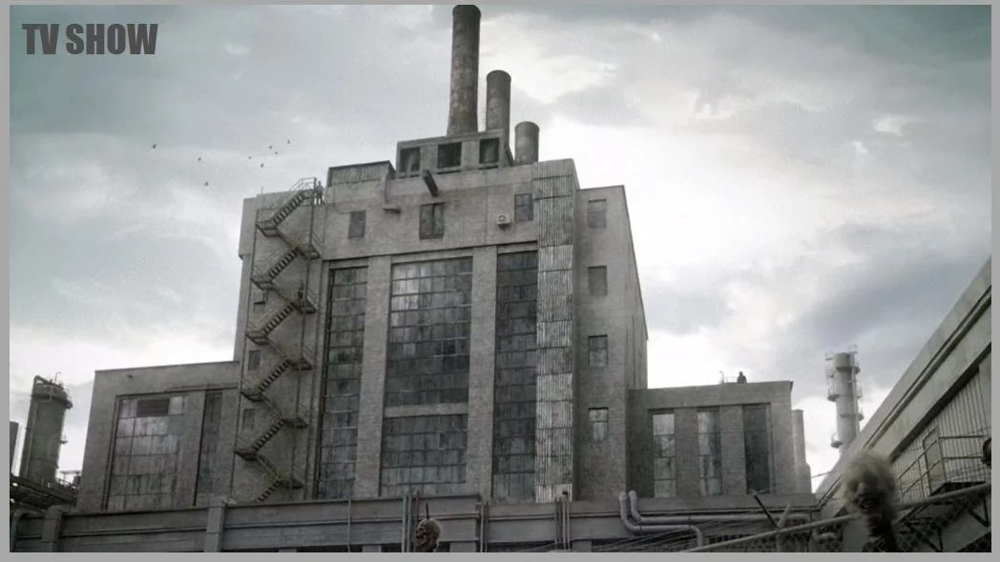
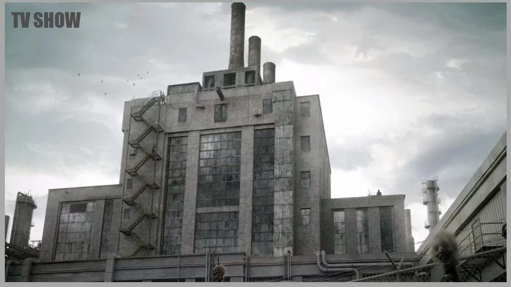

Voici les 5 lieux importants de la série The Walking Dead :



 


| Images | Histoire | Nombre d'épisodes |
|---|---|---|
| 1-La route d'Atlanta | La route d'Atlanta est une figure centrale au début de The Walking Dead : elle représente à la fois un lieu de départ, de perte d'espoir, de sacrifice, et de désillusion. Elle est aussi le cadre de plusieurs événements importants qui façonnent la dynamique du groupe de survivants. C'est un symbole de la transition entre la civilisation et le chaos qui va marquer les personnages tout au long de la série. | 6 épisodes, principalement dans la saison 1 |
| 2-Woodbury | Woodbury est un élément clé de la saison 3 de The Walking Dead, car elle symbolise une illusion de sécurité dans un monde où la survie devient un enjeu moral et existentiel. Ce lieu devient le terrain d'affrontement entre le groupe de Rick Grimes et le Gouverneur, un tyran sans scrupules qui utilise le contrôle, la peur et la violence pour maintenir son pouvoir. Au-delà de la confrontation physique, Woodbury représente un microcosme des dangers d'un leadership autoritaire et de la perte de l'humanité dans un monde post-apocalyptique. | 9 épisodes, du début de la saison 3 jusqu'à la fin de la saison 4 |
| 3-Terminus | Terminus est l'un des lieux les plus emblématiques et terrifiants de The Walking Dead, car il incarne l'illusion de refuge et de sécurité dans un monde post-apocalyptique. Ce qui semble être un sanctuaire se révèle rapidement être un piège où les survivants sont réduits à des victimes pour les cannibales qui dirigent le lieu. Le thème central de Terminus est celui de l'abus de pouvoir et de la décadence humaine, avec le cannibalisme comme métaphore de la perte totale de l'humanité dans un monde dévasté. La destruction de Terminus marque une nouvelle étape dans la lutte pour la survie du groupe de Rick et illustre la réalité de l'apocalypse : même les endroits les plus prometteurs peuvent se révéler être des endroits de terreur et de violence. | 5 épisodes, de la fin de la saison 4 jusqu'au début de la saison 5 |
| 4-Alexandria | Alexandria est un lieu charnière dans The Walking Dead. À la fois sanctuaire et piège, elle représente la possibilité de reconstruction dans un monde post-apocalyptique. Cependant, elle est aussi un test moral et un terrain de lutte pour le groupe de Rick, qui doit faire face à des menaces extérieures et aux contradictions internes liées à la survie et au leadership. Alexandria est un symbole d'espoir fragile : une nouvelle civilisation qui doit se défendre contre l'inhumanité du monde extérieur, tout en préservant ce qui reste de l'humanité à l'intérieur. | 20 épisodes, à partir de la saison 5 jusqu'à la saison 8. |
| 5-Sanctuaire | Le Sanctuaire dans The Walking Dead est un lieu de tyrannie et de terreur. Dirigé par Negan et les Saviors, il incarne la domination par la violence et la peur, où les autres communautés sont contraintes à la soumission. Bien qu'il semble offrir un certain confort matériel, ce refuge est en réalité un prison où la liberté individuelle est sacrifiée au profit de l'ordre imposé par la force. Le conflit entre le groupe de Rick et les Saviors représente une lutte non seulement pour les ressources, mais aussi pour l'idée d'un monde meilleur, où la survie ne rime pas avec soumission et violence, mais avec solidarité et espoir. La chute du Sanctuaire marque donc un tournant important dans la quête pour reconstruire un monde plus juste après l'apocalypse. | 15 épisodes, principalement de la saison 6 à la saison 8 |